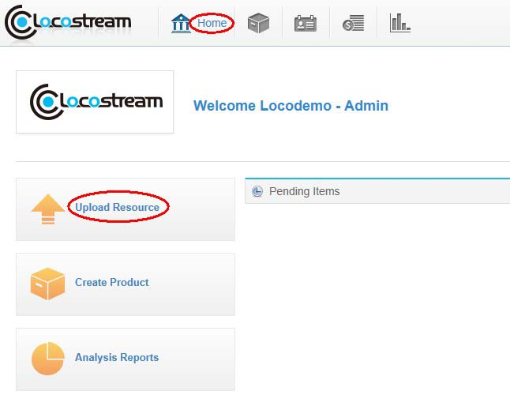
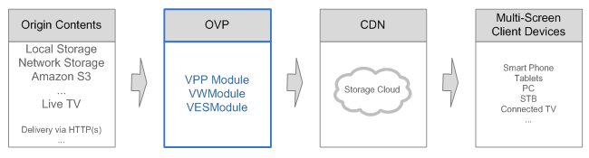

Help
Resource Management
-
You can upload a video as follows: get in the Home page and click Upload Resource then it will open an upload video application.

After clicking Create Resource then continue to click new, popping the upload video dialog box, now input resource name, select the video file which needed to upload and click OK. The system will finish the uploading automatically. After that you could check the processing status of the video file newly uploaded on the page of the resource management.

At present, system supports four format files to uploading: TS, MP4, WMV and MOV.
LocoStream Online Video Platform (OVP) is an easy-to-use platform with open architecture that combines securely the video online processing technology with the scalability and flexibility of the platform. The platform is designed to integrate cloud resources with existing workflows and extend transcoding capacity across various flexible editions and industry specific platform building capabilities. This capability enables the content providers to enhance multi-screen video offerings while generating more revenues and reducing infrastructure expenses. The follow figure depicts the workflow of online video processing.

Upload Resource